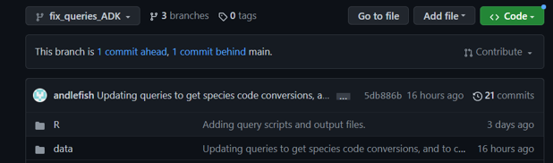

Git & GitHub
Collaboration
PULLED FROM GIT COLLABORATION by JJannot
Git Collaboration Determining Git Collaborative Work Flow is a huge part of working in a team! Who’s in charge of handling merging? Small team, should be one person Typically, project lead
THE MASTER BRANCH SHOULD ALWAYS BE DEPLOYABLE How to Collaborate Add collaborators to repository Collaborators clone repository to their local machine Making changes Create a New Branch off Develop Name it appropriately E.g., jason/newfeature Make changes locally Commit changes As a general rule, you should commit when you finish something that allows your code to work - usually ends up being a couple times an hour. Push changes to remote repository This will create a pull request that collaborators can review and see the changes Go to Github and create a pull request See the gitdiff Include message What has been done Usage To test, do…. Create pull request Add Reviewer - upper right hand corner NOTE: Can add more commits to a single pull request, provided it has not been reviewed and merged. HOWEVER, I would suggest only doing this for very minor changes - missing spaces, typos, missing last lines etc. Once reviewed, merge pull request with branch Reviewing Pull Requests Open the pull request Review the code changes Reviewer - provide comments and feedback in GitHub Originator - respond to comments, perhaps add comments Approve changes (upper right corner) and add approval comment Merge Master/Code owner merges all pull requests! Please do not merge your own code request. If the Merge Master is pushing code, then the reviewer should be responsible for merging the pull request. MergeMaster will delete the branch once the code has been merged. DONT FORGET TO PULL the new code to your local instance to get latest code.
Compare Two Branches on GitHub
Open the branch with the newest commits At the top you’ll see the number of commits difference like this:

Click on the link “
To link a pull request with an issue
To remove a file from tracking that is already being tracked
Move the file outside the git repository, i.e., save to your local machine/Desktop Add all the files, individually or in a folder, that you want to remove from the repo but keep locally to .gitignore. Execute For a file: git rm –cached put/here/your/file.ext For a folder: git rm –cached folder/* if they are in a folder. (It is /* because you need to escape the *) Commit your changes: git commit -m “